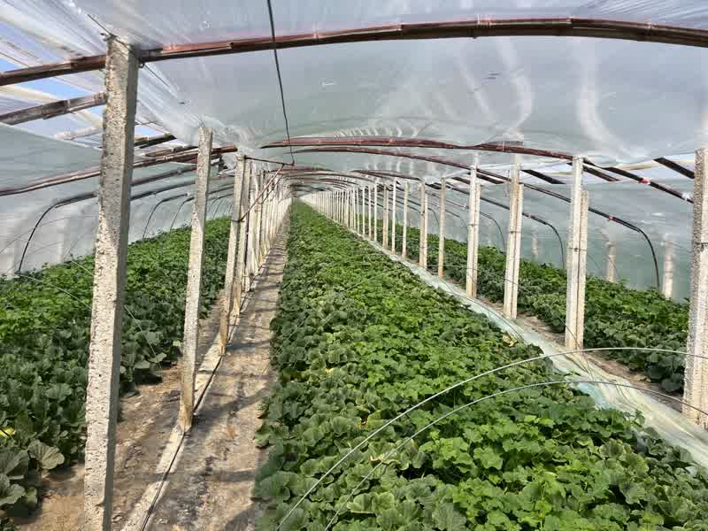
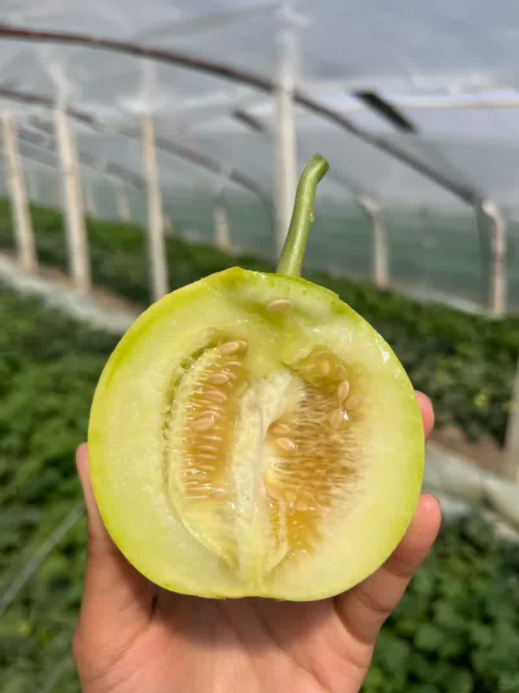

一、引言
马连庄甜瓜，山东省莱西市特产，全国农产品地理标志。它以"香、甜、脆"闻名遐迩，被市场亲切地称为"甜瓜界的香奈儿"，也是当地瓜农口中名副其实的"金疙瘩"——在销售旺季，一斤马连庄甜瓜能卖到30元仍供不应求。近年来，这颗"小甜瓜"已撑起一个年产值超10亿元的富民大产业。它何以脱颖而出？本文从产地溯源、品种解析、口感营养、上市周期、科技赋能、品牌建设与产业融合等维度，对马连庄甜瓜进行全景式深度分析。

马连庄甜瓜生产基地二、产地溯源：北纬37°的天然馈赠
马连庄镇位于山东省青岛市莱西市北部，地处胶东半岛中部。一条北纬37°黄金纬度线穿境而过，赋予了这片土地四季分明的气候与丰饶的自然资源。
优越的地理气候条件
马连庄镇年日照时数超过2700小时，充足的光照为甜瓜的光合作用提供了坚实保障；大棚形成的"昼暖夜凉"温差环境，使夜间呼吸作用减弱、有机物消耗减少，糖分得以持续积累。甜瓜生长对土壤要求严格，马连庄甜瓜的核心产区位于大沽河与军武河冲积平原，这里的沙壤土层厚达50厘米以上，通透性好、不易积水，有机质丰富，土壤酸碱度稳定在6.0至7.5之间，正好契合甜瓜的生长需求。
得天独厚的水源优势
灌溉用水来自大沽河上游与莱西湖，河水清澈甘甜、无污染，富含钾、钙等矿物质。用这"甘甜水"浇灌出来的甜瓜，果肉浸润着天然甘冽，口感格外清爽香甜。据莱西市农业技术推广中心2023年土壤检测数据显示，当地耕作层速效钾含量平均达186mg/kg，显著高于全国甜瓜主产区平均水平（140mg/kg），为甜瓜的糖度提升提供了关键支撑。
产地优势总结：正是这片好土好水，成就了马连庄甜瓜天生的"甜底子"——用当地瓜农的话说："换个地方就种不出这个味"。
三、品种解析：日本甜宝的本土化改良之路
马连庄甜瓜的主栽品种为"日本甜宝"，属厚皮甜瓜类型。马连庄镇种植甜瓜的历史可追溯至清代，据《莱西县志》记载，当时大沽河沿岸农户就有庭院零星种植甜瓜的习俗。真正实现规模化种植和品种跃升，则是近十余年的事情。
"日本甜宝"并非简单引种，而是马连庄镇联合山东省农科院、青岛农业大学，历经5年本土化改良培育而成，充分适配本地水土气候。镇种子培育基地专家工作站收集了2000多份种质资源，最终筛选出3个核心品种，建立了专属品种体系。种子质量达到NY474二级以上标准，每粒种子都要经过55℃温汤浸种消毒，既杀菌又提高发芽率。
该品种抗逆性强，在马连庄地区连续多年种植未见严重枯萎病发生。根据山东省农科院蔬菜研究所2022年品种比较试验数据，伊丽莎白甜瓜（与日本甜宝同源）在马连庄种植条件下，可溶性固形物含量稳定在14.5—16.8 Brix，显著高于江苏东台（13.2 Brix）和河北邯郸（13.8 Brix）等地同类品种。
此外，当地还通过甜瓜苗与南瓜苗嫁接技术，成功攻克了普通甜瓜不能重茬的难题，进一步提升了种植效益。
四、口感与营养：科学数据揭示独特风味
口感表现
马连庄甜瓜以"脆甜多汁、香气浓郁、回甘持久"著称。经中国农业大学食品科学与营养工程学院检测，成熟果实中心果肉糖度平均达15.9 Brix，边部果肉亦有13.6 Brix；果肉硬度为2.3kg/cm²，兼具爽脆与细腻口感。瓜农李守业用糖度计实测头茬瓜糖度为16.8度，正好落在15至18度的黄金区间——"酿酒都不用额外加糖，咬一口脆甜多汁、余味清香"。果皮薄且脆，从瓜皮到瓜籽均可食用，100%可食用率，果肉纤维含量低，咀嚼感顺滑，香气浓郁，入口即化。

可口的甜瓜营养成分
甜瓜除了水分和蛋白质的含量略低于西瓜外，其他营养成分均不少于西瓜，而芳香物质、矿物质、糖分和维生素C的含量则明显高于西瓜。每100克马连庄甜瓜果肉含维生素C约24—25mg、钾约220—268mg、β-胡萝卜素约112μg、膳食纤维约1.2g，热量仅约32kcal。其糖分组成以果糖为主，占总糖的50%以上，具有天然的清甜口感，不易引起血糖剧烈波动。低热量、高水分、富钾低钠的特点，使其成为理想的健康水果，尤其适合高血压人群和健身爱好者食用。
药用价值
中医认为，甜瓜具有"消暑热，解烦渴，利小便"的显著功效。其富含的维生素原A是优秀的抗氧化剂，β-胡萝卜素能保护皮肤免受阳光伤害，维生素C可促进胶原蛋白形成，赋予皮肤柔韧性和抗皱性。
五、上市时间及风味最佳期
马连庄甜瓜采用"春提早 + 秋延后"双季栽培模式，并通过早、中、晚熟品种搭配，实现了全年供应格局。
上市周期方面
每年春节前头茬甜瓜即可上市，至6月底结束，部分产区延续至10月。具体来看，春季头茬于3月初定植，5月下旬开始采收，6月上旬进入盛产期，此阶段产量占全年70%，品质最优；秋季二茬于7月下旬播种，9月中旬开始上市，供应至10月底。
风味最佳期方面
5月25日至6月15日被业内称为马连庄甜瓜的"黄金赏味窗口期"，此时昼夜温差最大，糖分积累最为充分，果肉脆度和香气均达到巅峰。值得关注的是，近年来随着高温大棚技术的推广，甜瓜上市时间不断前移。2026年初，马连庄甜瓜相较往年提前了一个月上市，头茬瓜批发价不低于20元/斤，一个两亩地的大棚收入可达10万元。3月收获的甜瓜需在高温棚种植，数量较少，价格最高；4月中旬后普通大棚甜瓜集中上市，价格逐渐回落。
六、科技赋能：从传统耕作到智慧农业
马连庄甜瓜的品质飞跃，离不开科技创新的深度赋能。
设施农业全面升级
全镇现有种植面积3万余亩、智能大棚8000余个。智慧农业设备的全面应用成为标配：智能温控、水肥一体化、自动卷帘、冷链仓储等设备已实现普及。国网莱西供电公司为此编制甜瓜产业供电专项方案，实施"一园一策、一棚一档"精准供电，建立15分钟极速服务圈。瓜农采用"四层覆盖"防寒保温技术，即便外面在-5℃，棚内温度也能保持在10℃以上，精准调控温湿度，为甜瓜营造适宜的生长环境。
科研合作持续深化
马连庄镇与山东农业大学合作建设乡村特色产业高质量发展研究基地，与青岛农业大学合作建设青岛市甜瓜种植专家工作站，提出的《鲁岚新村甜瓜新品种引进筛选及栽培技术示范与应用》课题入选青岛市科技惠民示范专项。目前已收集试种64个甜瓜品种，为品种迭代提供了丰富的种质储备。
标准化生产全面推进
当地制定了涵盖产地选择、品种筛选、水肥管理、采收分级等全流程的操作规范，推行"四统一"模式——统一质量标准、统一投入品供应、统一技术培训、统一销售，并建立完善的种植档案制度，实现全程可追溯。在质量监管方面，种植旺季每月抽检2次以上，建立"用药白名单"禁用高毒高残留农药，对土壤和灌溉水定期监测，抽检合格率持续保持在较高水平。
七、品牌建设：从地方特产到全国名品
地理标志认证体系
马连庄甜瓜的品牌建设始于认证体系的搭建。2009年，通过农业农村部无公害农产品认证；2010年，获农业农村部批准实施农产品地理标志登记保护；2023年，跻身"全国名特优新农产品"名录。按照"三品一标"农产品要求，当地以无公害、绿色、有机产品和地理标志的生产思路，努力打造"高端、高质、高效、生态"的甜瓜基地。
品牌运营与市场拓展
2017年，当地指导企业申请注册"马恋庄"商标，涵盖新鲜甜瓜、加工品等10余个类别，并建立"线上监测 + 线下排查"的商标保护机制。目前，"马连庄甜瓜"已纳入"莱西有礼"区域公用品牌体系。在销售端，马连庄甜瓜远销北京、大连、上海、广州等大城市，80%的马连庄甜瓜销往中高端市场。
线上线下融合营销
当地先后与盒马鲜生、东方甄选、抖音、快手等平台建立深度合作，直播电商将马连庄甜瓜销到了全国各地，最高峰时短短5分钟就能销售上万单。每年春季，马连庄镇举办甜瓜艺术节，至今已举办至第九届，吸引全国客商和游客，成为品牌推广的重要窗口。
八、产业融合：全产业链的多元拓展
"共富模式"激活组织效能
马连庄镇打破传统分散种植与合作社各自为战的格局，整合全镇80余个合作社，组建镇村两级强村共富公司。村级共富公司负责组织货源、把控质量，镇级共富公司负责统一对接销售平台和商超，高峰期共富云仓的日销量可达10吨以上。目前，全镇77个村庄中90%的村庄种植甜瓜，种植面积达3万余亩，年产优质甜瓜约15000万斤，整个甜瓜产业平均年产值超10亿元，每亩为群众增收超3万元。
精深加工延长产业链
针对甜瓜保鲜期短、附加值不高等问题，马连庄镇引进深加工企业，建设乡村振兴瓜果精酿啤酒项目，创新研发甜瓜小麦精酿啤酒。通过这种方式，每斤甜瓜可增加附加值12元。企业每年可生产水果啤酒1500吨，消化当地水果500吨，满产可实现营收3000万元，还为附近村民提供了就业岗位。酿酒过程中产生的酒糟免费送给果农改良土壤、养殖户做饲料，形成"水果酿酒—酒糟还田—有机肥种果"的绿色闭环。
多元产业协同发展
在甜瓜产业之外，马连庄镇还依托水土资源大力发展"南果北种"特色产业，引进麒麟西瓜、蓝莓等品种，构建起"一年四果、一季一品"的果业种植格局，涵盖春季甜瓜、夏季葡萄、秋季苹果、冬季草莓四个果业品牌，形成了四季瓜果飘香的产业新格局。
结语
从大沽河畔的沙壤土，到历经5年改良的日本甜宝；从15至18度的黄金糖度，到年产值超10亿元的富民产业——马连庄甜瓜的崛起，是自然禀赋与科技创新深度融合的生动实践。它以标准化生产守护品质底线，以品牌化运营打开全国市场，以产业融合提升综合效益，走出了一条从"地方特产"到"全国名品"的农业高质量发展之路。这颗"金疙瘩"的香甜密码，为中国特色农产品品牌建设提供了值得借鉴的"马连庄样本"。